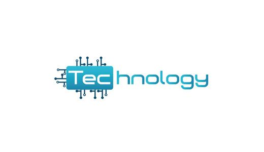
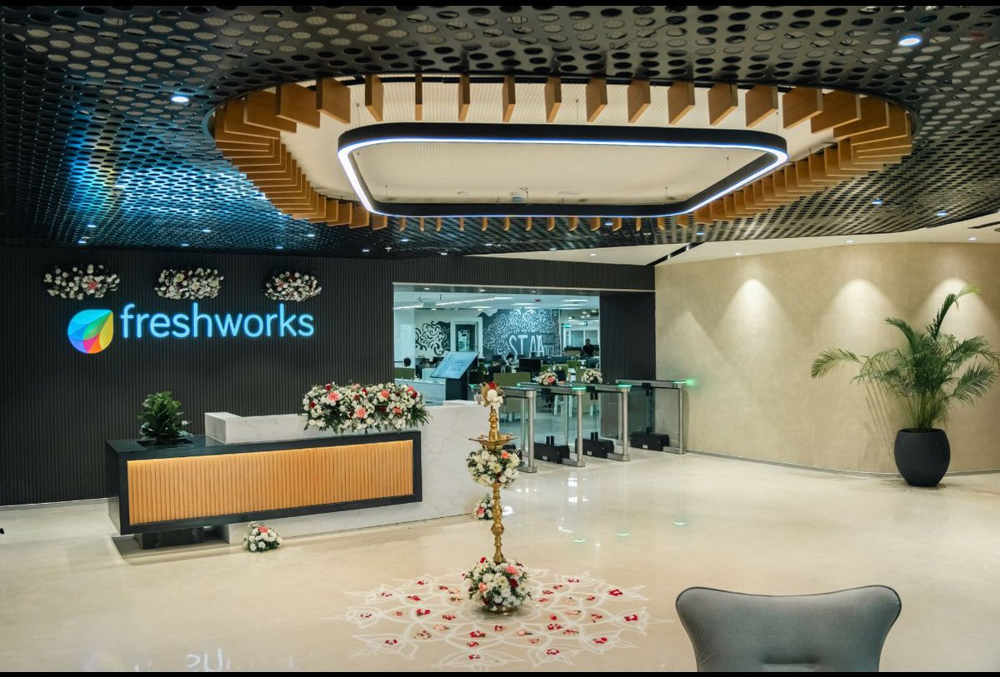
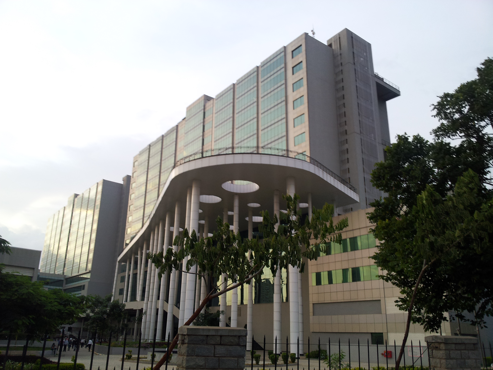
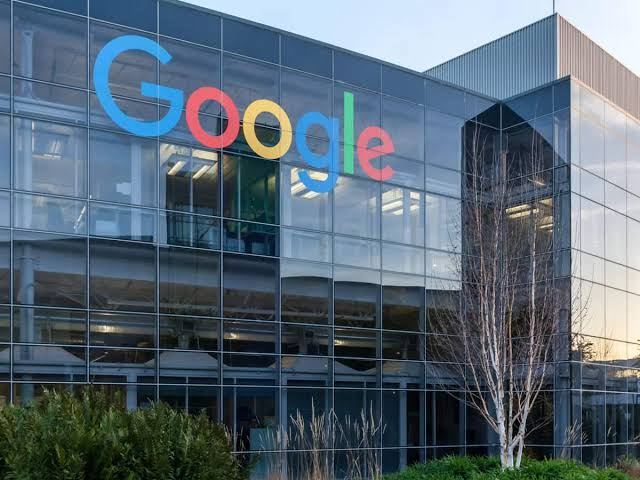
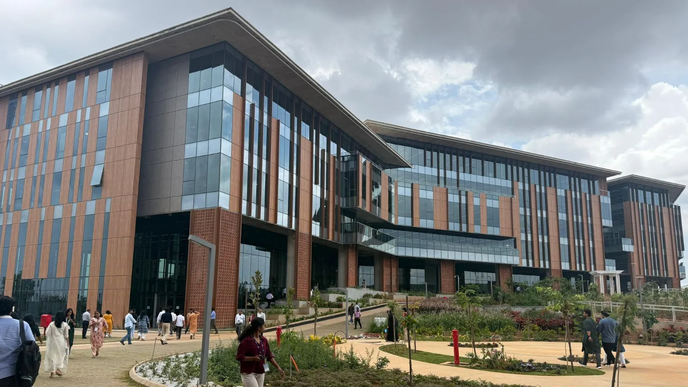
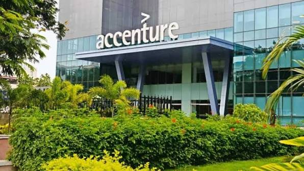
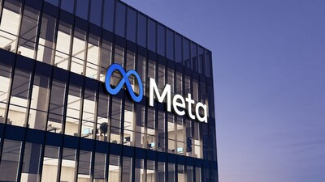
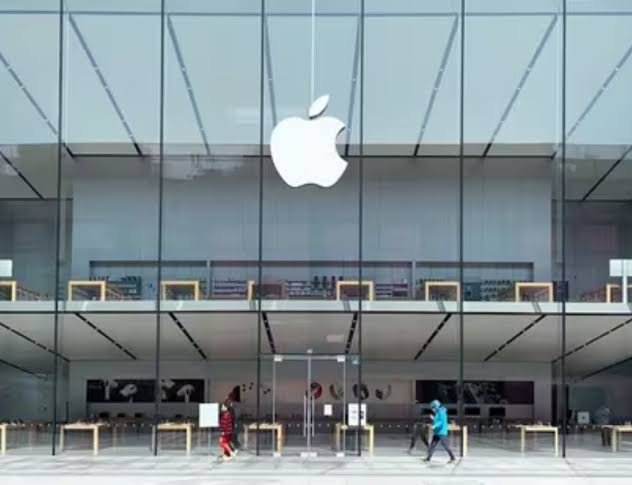

Top IT Companies

Chennai Based Service Companies

About TCS
India's largest IT services exporter. They offer massive global delivery networks and fresh graduate training programs from their primary hub at TIDEL Park, Taramani. TCS generated revenues over $30 billion in the fiscal year ending March 31, 2026. Its Q1 FY27 consolidated revenues were ₹72,275 crore, and the company added over 9,000 employees in that quarter alone. The CEO is K. Krithivasan. The company has announced aspirations to become the world’s largest AI-led technology services.
Chennai Based Product Companies

ABOUT FRESHWORKS
Headquartered in Chennai, this global tech unicorn develops user-friendly cloud software for CRM, IT service management, and business analytics.
For open positions in Chennai, such as Product Manager, Marketing Operations Specialist, and Software Engineer.
The Chennai workforce generally rates the company’s engineering practices highly, though some note corporate structural growth constraints. You can read detailed, first-hand employee perspectives.
Chennai based Software Comapnies

ABOUT INFOSYS
Infosys has a massive presence in Chennai, operating major software development centers and IT parks across the city. Their facilities serve as crucial hubs for global consulting, digital transformation, and IT services for clients worldwide.
Situated on the Old Mahabalipuram Road (OMR), this 13-acre campus is one of the earliest established facilities in the IT corridor.
the larger campuses—particularly Mahindra World City—function as self-contained "business cities." Amenities at these locations include expansive food courts, guest houses, banking facilities, a bowling alley, a swimming pool, and sports complexes.
Bangalore Based Service Company

ABOUT WIPRO
Wipro Limited is a global IT consulting and business process services company headquartered in Bangalore. Operating globally with over 240,000 employees, the company provides digital transformation, cloud computing, and AI services. The main corporate campus is located on Sarjapur Road.
It provides technology and business consulting to a global client base, supported by additional centers like the newer Kodathi Centre of Excellence for AI and smart manufacturing.
Founded in 1945 as a vegetable oil company, it expanded into computing and IT under the leadership of Azim Premji, growing into one of India’s largest IT corporations.
Bangalore Based Product Company

ABOUT GOOGLE
Google’s Bangalore operations are anchored by Ananta, a massive 1.6-million-square-foot campus in Mahadevapura. It hosts over 5,000 employees and serves as a major hub for AI development. The company previously operated out of RMZ Infinity on Old Madras Road.
One of India’s largest installations of electro-chromic glass for temperature regulation.
Built with earthquake-resistant structures, AI-powered energy systems, rainwater harvesting, and a custom "mini forest".
Bangalore Based Software Company

ABOUT SAP
SAP India's headquarters and its largest R&D hub outside of Germany are in Bengaluru. Operating primarily out of two massive campuses (including a major 15,000-person Innovation Park), the tech professionals here drive core solutions, product strategy, and next-generation AI and cloud innovations for the global SAP portfolio.
The Bangalore hubs act as an engine for ground-up innovation, customer experience, and sustainability, leading the company's regional expansion.
Highly rated by employees for a healthy work-life balance and vibrant campus amenities, which include shuttle services, cafeterias, and recreational facilities.
Hydrabad Based Service Company

ABOUT ACCENTURE
Accenture in Hyderabad operates major delivery, technology, and innovation centers. The primary campuses are located in IT hubs like Madhapur (Raheja Mindspace) and Serilingampally (WaveRock).
The company operates out of major tech parks, notably Raheja Mindspace in Madhapur and WaveRock building in Nanakramguda. There are also facilities known as HDC (Hyderabad Delivery Centers).
The Hyderabad Innovation Hub spans 300,000 sq ft and houses over 2,000 professionals who help clients prototype and scale digital services.
Hydrabad Based Product Company

ABOUT META
Meta (Facebook's parent company) has a major, rapidly growing presence in Hyderabad, operating as a key Global Capability Centre (GCC) for the tech giant. In the city, Meta focuses on engineering, product development, global operations, policy, and business growth.
Strengthening its deep commitment to India, Meta leased an additional 69,702 sq. ft. of Grade-A office space in HITEC City to house growing local teams.
Meta's local footprint in Hyderabad has evolved significantly over the years, growing into one of their primary talent hubs. You can explore open roles and submit your application through the Meta Careers Portal.
Hydrabad Based Softwaare Company

ABOUT APPLE
Apple’s presence in Hyderabad is massive, primarily anchored at the LEED-certified WaveRock campus in Gachibowli. Originally launched in 2016 to develop Apple Maps, the operation has expanded into a global hub for AI, data platform engineering, and backend support. The city also features expanding physical retail and service operations.
The campus employs thousands working on advanced technology domains such as artificial intelligence, site reliability engineering, and data protection.
The engineering teams process massive amounts of geospatial data to continuously update and refine Apple Maps across all devices.
Services
Building Innovative Solutions for Your Success. Web Development. Mobile Application Development. UI/UX Design. Digital Marketing. Technical Support. Cloud Solutions.
HELP
Welcome! We're here to help you make the most of our website and services. If you have any questions, you'll find answers to the most common ones below.
Contact
To Contact our page, kindly click the button on the top Contact.